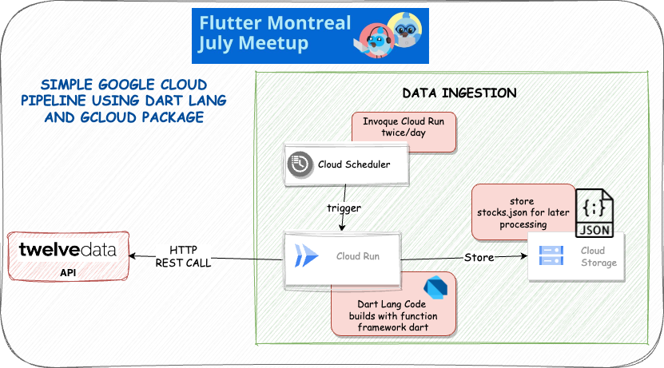

Building a Google Cloud Pipeline with Dart Lang and F.a.a.S
July Flutter Meetup
About me
-
Senior Director, Software Development @Datavalet
-
Dart & Flutter GDE
-
Former Google Cloud Premier Partner
Overview of Google Cloud Platform (GCP)

Overview of Google Cloud Platform (GCP)
-
Scalable and flexible cloud platform
Introduction to FaaS (Function as a Service)
-
FaaS: Serverless computing paradigm
-
Benefits:
- Automatic scaling
- Reduced operational complexity
- Cost optimization
-
Key FaaS platforms:
- Cloud Functions (GCP)
- AWS Lambda (Amazon Web Services)
- Azure Functions (Microsoft Azure)
How to write a Native Cloud Function as Dart Developer …

CaaS vs. FaaS
CaaS (Container as a Service)
-
CaaS provides a platform for running containers without managing the underlying infrastructure.
-
Key features of CaaS:
- Container orchestration
- Scalable infrastructure
Cloud Run vs Cloud Function

Cloud Run

Demo Architecture Overview

Demo Application Walkthrough
Step-by-step demonstration of the application:
- Fetching data from the external API
- Processing and manipulating the data using CaaS ( Cloud Run)
- Storing the data in Cloud Storage
- Scheduling application execution with Cloud Scheduler
- Showing real-time execution and results
Key Development Tools
-
- An open-source FaaS (Function as a Service) framework for writing portable Dart functions.
-
- A Google Cloud Platform support package for Dart, providing APIs and utilities for GCP services.
-
- IDE support for the full development cycle of Kubernetes and Cloud Run applications.
Hands-on Coding
It’s time to dive into some code!
Key Takeaways
-
Building a Google Cloud Pipeline with Dart and FaaS:
-
Leverages Dart’s modern features for web and mobile app development
-
Takes advantage of FaaS for serverless computing benefits
-
Utilizes GCP services like Cloud Run, Cloud Storage, and Cloud Scheduler
-